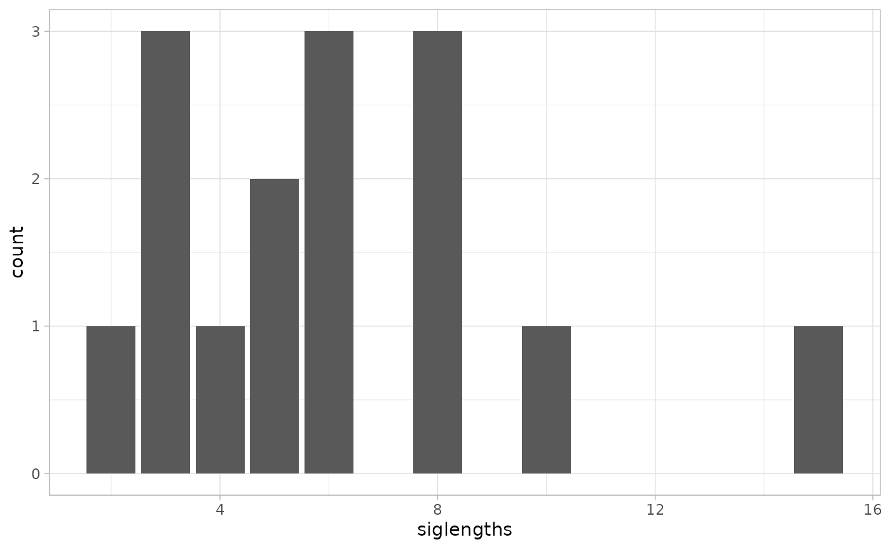
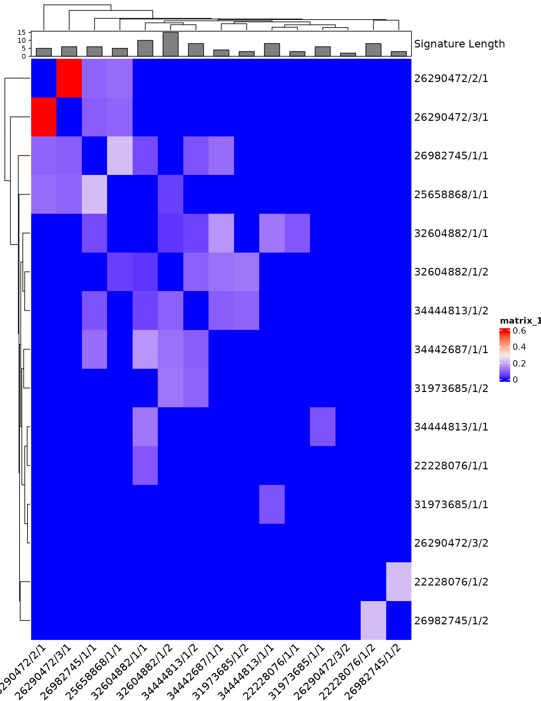
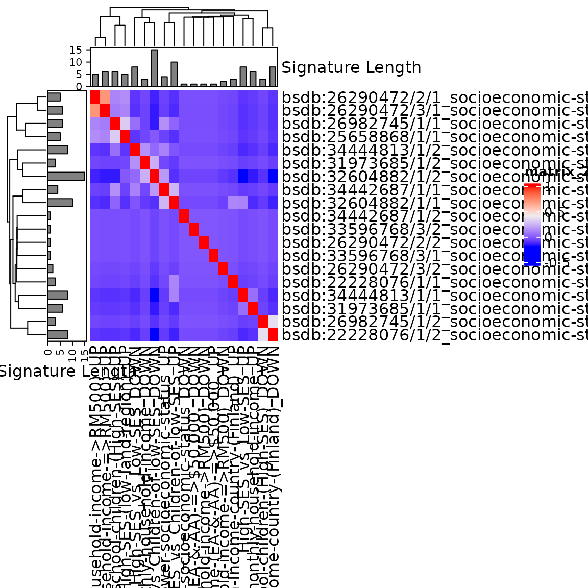
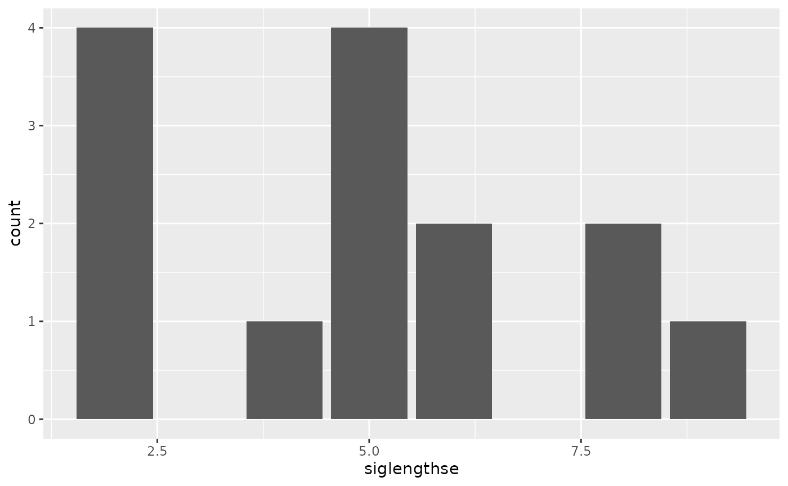
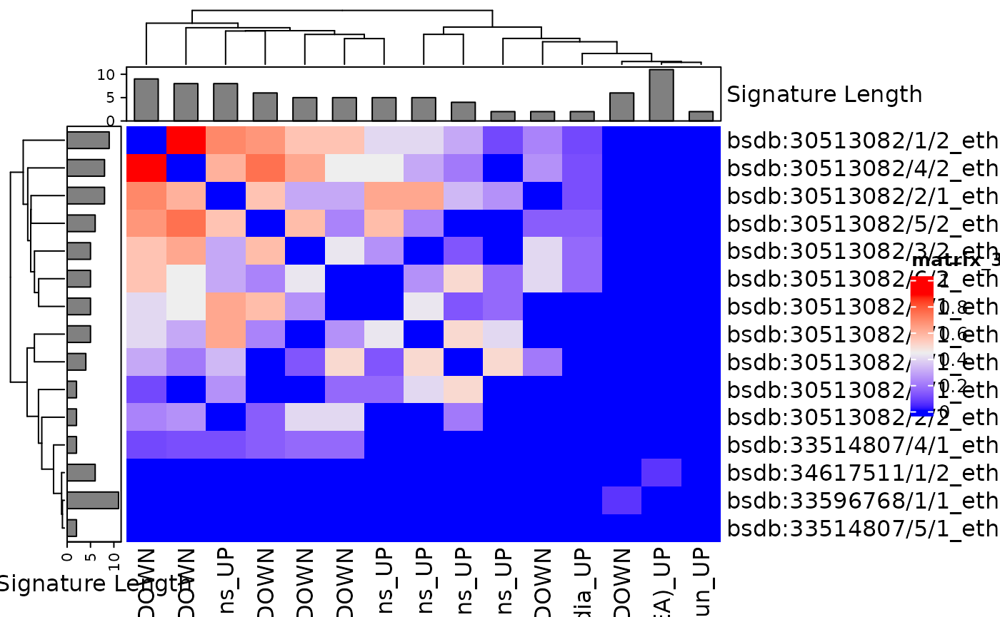
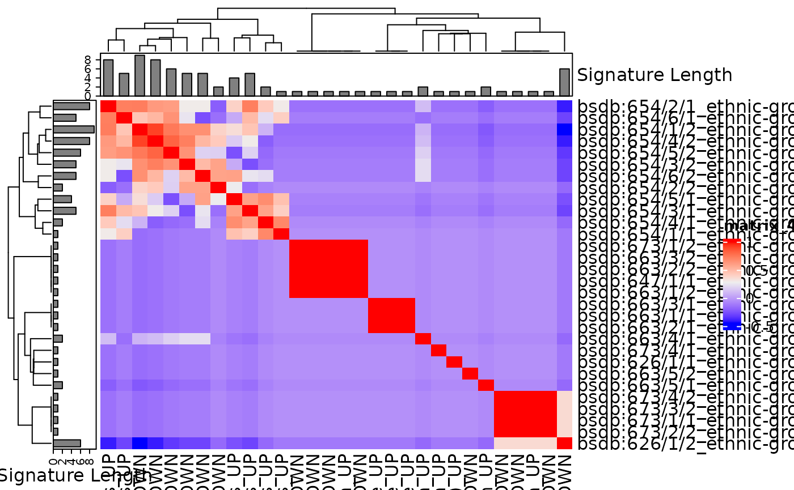

Distinguishing socioeconomic and racial/ethnic variation of the human gut microbiome by re-analysis of studies from around the world
Ifeanyi Kalu
09 November, 2026
Source:vignettes/capstoneanalysis_ifeanyi.Rmd
capstoneanalysis_ifeanyi.RmdObjectives of the study
To assess commonality or heterogeneity in socioeconomic and ethnic patterning of the fecal microbiome in studies undertaken in various parts of the world, through cluster analysis of results on differentially abundant taxa.
Data Analysis Plan
creating frequency tables of how many signatures each microbial taxon (species, genus, or other rank) has been reported – by race/ethnicity separately, by SES separately, and for all studies combined.
cluster analysis of the signatures. Similarity between all pairs of signatures will be calculated using Jaccard Distance, to create a distance matrix. This distance matrix will be used for hierarchical clustering, to identify subgroups of similar signatures. This analysis will be performed separately for signatures of increased abundance and of decreased abundance (in low SES and non-white/Caucasian ethnicity) repeated using Semantic Similarity as an alternative measure of signature similarity, in sensitivity analysis.
Common and distinct effects of SES and race/ethnicity on the gut microbiome will be identified using meta-regression for the most identified taxa. Specifically, the signature will be the unit of analysis, with the presence or absence of the taxon in each study coded as a 0/1 binary variable in a regression analysis.
Install Packages
This is not evaluated, run manually if needed.
if (!require("BiocManager", quietly = TRUE))
install.packages("BiocManager")
BiocManager::install()
BiocManager::version()
BiocManager::install("remotes", dependencies = TRUE)
BiocManager::install("waldronlab/bugSigSimple")
BiocManager::install("curatedMetagenomicData")
devtools::install_github("waldronlab/BugSigDBStats")
devtools::install_github("waldronlab/bugsigdbr")
suppressPackageStartupMessages({
library(bugSigSimple)
library(BugSigDBStats)
library(bugsigdbr)
library(tidyverse)
library(stringr)
library(kableExtra)
library(dplyr)
library(ComplexHeatmap)
library(jtools) # to make a pretty glm summary output
})
theme_set(theme_light())Import data from Bugsigdb database
dat <- bugsigdbr::importBugSigDB(cache = FALSE) #11/27/2022
dim(dat)## [1] 7425 51Subset Signatures by Curator and Conditions
dat.sub <- subsetByCurator(dat, "Kaluifeanyi101") %>%
dplyr::filter(`Body site` == "Feces") %>%
mutate(`Body site` = tolower(`Body site`)) %>%
mutate(`Condition` = tolower(`Condition`))
table(dat.sub[,"Condition"]) %>%
sort(decreasing = TRUE) %>%
as.data.frame() %>%
kbl() %>%
kable_styling()| Var1 | Freq |
|---|---|
| ethnic group | 31 |
| socioeconomic status | 19 |
| ethnic group,socioeconomic status | 2 |
| place of residence measurement,ethnic group | 2 |
| risk factor | 2 |
| sampling time | 2 |
Table of studies
bugSigSimple::createStudyTable(dat.sub) %>%
kbl() %>%
kable_styling()| Study Identifier | MaxCases | MaxControls | Study design | Condition | N_signatures | PMID | DOI | URL |
|---|---|---|---|---|---|---|---|---|
| AmaruddinA.I._2020 | 74 | 66 | cross-sectional observational, not case-control | socioeconomic status | 2 | 32604882 | https://doi.org/10.3390/microorganisms8060961 | NA |
| AngQ.Y._2021 | 22 | 24 | cross-sectional observational, not case-control | ethnic group | 2 | 34617511 | https://doi.org/10.7554/eLife.70349 | https://pubmed.ncbi.nlm.nih.gov/34617511 |
| BalakrishnanB._2021 | 30 | 30 | cross-sectional observational, not case-control | ethnic group; socioeconomic status | 3 | 33596768 | https://doi.org/10.1080/19490976.2021.1882926 | NA |
| BrooksA.W._2018 | 88 | 1237 | cross-sectional observational, not case-control | ethnic group | 12 | 30513082 | https://doi.org/10.1371/journal.pbio.2006842 | https://pubmed.ncbi.nlm.nih.gov/30513082/ |
| CarsonT.L._2018 | 47 | 33 | cross-sectional observational, not case-control | ethnic group | 1 | 29901485 | https://doi.org/10.1097/PSY.0000000000000614. | https://pubmed.ncbi.nlm.nih.gov/29901485/ |
| ChongC.W._2015 | 20 | 24 | cross-sectional observational, not case-control | socioeconomic status | 4 | 26290472 | https://doi.org/10.1038/srep13338 | https://pubmed.ncbi.nlm.nih.gov/26290472/ |
| DeFilippoC._2010 | 14 | 15 | cross-sectional observational, not case-control | place of residence measurement,ethnic group | 2 | 20679230 | https://doi.org/10.1073/pnas.1005963107 | https://pubmed.ncbi.nlm.nih.gov/20679230/ |
| DwiyantoJ._2021 | 54 | 65 | cross-sectional observational, not case-control | ethnic group | 9 | 33514807 | https://doi.org/10.1038/s41598-021-82311-3 | https://pubmed.ncbi.nlm.nih.gov/33514807/ |
| EscobarJ.S._2014 | 30 | 54 | cross-sectional observational, not case-control | ethnic group | 6 | 25495462 | https://doi.org/10.1186/s12866-014-0311-6 | https://www.ncbi.nlm.nih.gov/pmc/articles/PMC4275940/ |
| GreenhillA.R._2015 | 86 | 29 | cross-sectional observational, not case-control | socioeconomic status | 1 | 25658868 | https://doi.org/10.1371/journal.pone.0117427 | https://pubmed.ncbi.nlm.nih.gov/25658868/ |
| GrześkowiakŁ._2012 | 44 | 31 | cross-sectional observational, not case-control | socioeconomic status | 2 | 22228076 | https://doi.org/10.1097/MPG.0b013e318249039c. | https://pubmed.ncbi.nlm.nih.gov/22228076/ |
| KortekangasE._2020 | NA | NA | prospective cohort | sampling time | 2 | 32011017 | https://doi.org/10.1111/ppe.12623 | NA |
| LapidotY._2021 | 70 | 69 | cross-sectional observational, not case-control | socioeconomic status | 2 | 34444813 | https://doi.org/10.3390/nu13082645 | https://pubmed.ncbi.nlm.nih.gov/34444813/ |
| LevinA.M._2016 | 168 | 130 | prospective cohort | risk factor | 2 | 27558272 | https://doi.org/10.1038/srep31775 | NA |
| LewisC.R._2021 | NA | NA | cross-sectional observational, not case-control | socioeconomic status | 2 | 34442687 | https://doi.org/10.3390/microorganisms9081608 | https://pubmed.ncbi.nlm.nih.gov/34442687/ |
| LinA._2013 | 6 | 4 | cross-sectional observational, not case-control | ethnic group,socioeconomic status | 2 | 23349750 | https://doi.org/10.1371/journal.pone.0053838 | https://pubmed.ncbi.nlm.nih.gov/23349750/ |
| MelloC.S._2016 | 100 | 30 | cross-sectional observational, not case-control | socioeconomic status | 2 | 26982745 | https://doi.org/10.1097/MPG.0000000000001186 | https://pubmed.ncbi.nlm.nih.gov/26982745/ |
| Moran-RamosS._2020 | NA | NA | cross-sectional observational, not case-control | socioeconomic status | 2 | 31973685 | https://doi.org/10.1080/19490976.2020.1712985 | https://pubmed.ncbi.nlm.nih.gov/31973685/ |
Taxon Frequency Table by SES
## [1] 19 51
bugSigSimple::createTaxonTable(dat.sub_SES) %>%
kbl() %>%
kable_styling()| Taxon Name | Taxonomic Level | total_signatures | increased_signatures | decreased_signatures | Binomial Test pval |
|---|---|---|---|---|---|
| Eubacterium | genus | 4 | 3 | 1 | 0.63 |
| Bacteroidota | phylum | 4 | 4 | 0 | 0.12 |
| Prevotella | genus | 3 | 0 | 3 | 0.25 |
| Deltaproteobacteria | class | 2 | 2 | 0 | 0.50 |
| Bifidobacterium | genus | 2 | 2 | 0 | 0.50 |
| Atopobiaceae | family | 2 | 1 | 1 | 1.00 |
| Bacillota | phylum | 2 | 2 | 0 | 0.50 |
| Clostridium perfringens | species | 2 | 0 | 2 | 0.50 |
| Oscillospiraceae | family | 2 | 2 | 0 | 0.50 |
| Faecalibacterium | genus | 2 | 1 | 1 | 1.00 |
Taxon Frequency Table by Race-ethnicity
## [1] 31 51
bugSigSimple::createTaxonTable(dat.sub_ethnic) %>%
kbl() %>%
kable_styling()| Taxon Name | Taxonomic Level | total_signatures | increased_signatures | decreased_signatures | Binomial Test pval |
|---|---|---|---|---|---|
| Eubacteriales | order | 7 | 2 | 5 | 0.450 |
| Coriobacteriaceae | family | 6 | 2 | 4 | 0.690 |
| Christensenellaceae | family | 6 | 1 | 5 | 0.220 |
| Peptococcaceae | family | 6 | 3 | 3 | 1.000 |
| Veillonella | genus | 6 | 6 | 0 | 0.031 |
| Odoribacteraceae | family | 6 | 3 | 3 | 1.000 |
| Odoribacter | genus | 6 | 3 | 3 | 1.000 |
| Rikenellaceae | family | 6 | 2 | 4 | 0.690 |
| Victivallaceae | family | 6 | 4 | 2 | 0.690 |
| Verrucomicrobiaceae | family | 6 | 0 | 6 | 0.031 |
Taxon Frequency Table by all studies (SES and Ethnicity) combined.
bugSigSimple::createTaxonTable(dat.sub, n = 50) %>%
kbl() %>%
kable_styling()| Taxon Name | Taxonomic Level | total_signatures | increased_signatures | decreased_signatures | Binomial Test pval |
|---|---|---|---|---|---|
| Prevotella | genus | 10 | 6 | 4 | 0.750 |
| Eubacteriales | order | 9 | 4 | 5 | 1.000 |
| Rikenellaceae | family | 8 | 4 | 4 | 1.000 |
| Coriobacteriaceae | family | 7 | 2 | 5 | 0.450 |
| Bacillota | phylum | 7 | 3 | 4 | 1.000 |
| Veillonella | genus | 7 | 7 | 0 | 0.016 |
| Bacteroides | genus | 7 | 2 | 5 | 0.450 |
| Odoribacter | genus | 7 | 4 | 3 | 1.000 |
| Christensenellaceae | family | 6 | 1 | 5 | 0.220 |
| Clostridium | genus | 6 | 4 | 2 | 0.690 |
| Eubacterium | genus | 6 | 4 | 2 | 0.690 |
| Peptococcaceae | family | 6 | 3 | 3 | 1.000 |
| Odoribacteraceae | family | 6 | 3 | 3 | 1.000 |
| Victivallaceae | family | 6 | 4 | 2 | 0.690 |
| Verrucomicrobiaceae | family | 6 | 0 | 6 | 0.031 |
| Ruminococcus | genus | 5 | 3 | 2 | 1.000 |
| Bacteroidota | phylum | 5 | 5 | 0 | 0.062 |
| Bifidobacterium | genus | 4 | 3 | 1 | 0.630 |
| Bifidobacterium longum | species | 4 | 3 | 1 | 0.630 |
| Oscillospiraceae | family | 4 | 4 | 0 | 0.120 |
| Faecalibacterium | genus | 4 | 3 | 1 | 0.630 |
| Faecalibacterium prausnitzii | species | 4 | 2 | 2 | 1.000 |
| Bifidobacterium adolescentis | species | 3 | 1 | 2 | 1.000 |
| Bifidobacterium bifidum | species | 3 | 2 | 1 | 1.000 |
| Lactobacillus | genus | 3 | 2 | 1 | 1.000 |
| Blautia | genus | 3 | 2 | 1 | 1.000 |
| Bacteroides fragilis | species | 3 | 1 | 2 | 1.000 |
| Bacteroides thetaiotaomicron | species | 3 | 0 | 3 | 0.250 |
| Enterobacteriaceae | family | 3 | 1 | 2 | 1.000 |
| Deltaproteobacteria | class | 2 | 2 | 0 | 0.500 |
| Actinomycetota | phylum | 2 | 2 | 0 | 0.500 |
| Bifidobacterium breve | species | 2 | 1 | 1 | 1.000 |
| Bifidobacterium catenulatum | species | 2 | 1 | 1 | 1.000 |
| Bifidobacterium pseudocatenulatum | species | 2 | 1 | 1 | 1.000 |
| Bifidobacterium ruminantium | species | 2 | 1 | 1 | 1.000 |
| Atopobiaceae | family | 2 | 1 | 1 | 1.000 |
| Slackia | genus | 2 | 2 | 0 | 0.500 |
| Staphylococcus | genus | 2 | 1 | 1 | 1.000 |
| Enterococcus | genus | 2 | 2 | 0 | 0.500 |
| Lactococcus | genus | 2 | 1 | 1 | 1.000 |
| Clostridium perfringens | species | 2 | 0 | 2 | 0.500 |
| Anaerotruncus | genus | 2 | 1 | 1 | 1.000 |
| Oscillospira | genus | 2 | 1 | 1 | 1.000 |
| butyrate-producing bacterium M21/2 | species | 2 | 1 | 1 | 1.000 |
| Clostridiales bacterium | species | 2 | 1 | 1 | 1.000 |
| Lachnospiraceae | family | 2 | 1 | 1 | 1.000 |
| Anaerostipes | genus | 2 | 2 | 0 | 0.500 |
| Butyrivibrio | genus | 2 | 2 | 0 | 0.500 |
| Coprococcus | genus | 2 | 1 | 1 | 1.000 |
| Dorea | genus | 2 | 1 | 1 | 1.000 |
Cluster Analysis for signatures of increased abundance and of decreased abundance in low SES calculated using Jaccard Distance to create a distance matrix.
allsigs <- bugsigdbr::getSignatures(dat.sub_SES , tax.id.type = "taxname")
allsigs <- allsigs[sapply(allsigs, length) > 1] #require length > 1
length(allsigs)## [1] 15
mydists <- BugSigDBStats::calcPairwiseOverlaps(allsigs)
dim(mydists)## [1] 22 8Visualize the distribution of the signature lengths
library(ggplot2)
siglengths <- sapply(allsigs, length)
siglengths.df <- data.frame(siglengths = siglengths)
ggplot(siglengths.df, aes(x=siglengths)) +
geom_bar()
table(siglengths)## siglengths
## 2 3 4 5 6 8 10 15
## 1 3 1 2 3 3 1 1Create a matrix of Jaccard similarities (0 for no overlap, 1 for 100% overlap)
jmat <- BugSigDBStats::calcJaccardSimilarity(allsigs)##Create a Clustered heatmap
library(ComplexHeatmap)
ha <- HeatmapAnnotation(`Signature Length` = anno_barplot(siglengths))
hr <- rowAnnotation(
`Signature Length` = anno_barplot(siglengths)
)
hm <- Heatmap(
jmat,
top_annotation = ha,
# left_annotation = hr,
# column_names_max_height = unit(23, "cm"),
column_names_rot = 45,
# row_names_max_width = unit(15, "cm"),
# get rid of study labels
row_labels = sub("bsdb:", "", sub("_.+", "", rownames(jmat)), fixed = TRUE),
column_labels = sub("bsdb:", "", sub("_.+", "", colnames(jmat)), fixed = TRUE)
)
hm
Create a wide format dataframe for Regression Analysis
dat_withsigs <- filter(dat.sub_SES , !is.na(dat.sub_SES$`NCBI Taxonomy IDs`))
sigs <- bugsigdbr::getSignatures(dat_withsigs, tax.id.type = "taxname")
cmat <- t(safe::getCmatrix(sigs, as.matrix = TRUE, min.size = 0, prune = FALSE))## WARNING: rows are sorted elements of keyword.list
## 19 categories formed
cdf <- data.frame(cmat, stringsAsFactors = FALSE, check.names = FALSE)
cdf <- cbind(dat_withsigs, cdf)
dim(cdf)## [1] 19 122An arbitrary example of meta-regression:
fit <-
glm(
Prevotella ~ `Location of subjects` + `Sequencing type` + `Abundance in Group 1`,
family = binomial(link = "logit"),
data = cdf
)## Warning: glm.fit: fitted probabilities numerically 0 or 1 occurred
jtools::summ(fit)| Observations | 19 |
| Dependent variable | Prevotella |
| Type | Generalized linear model |
| Family | binomial |
| Link | logit |
| 𝛘²(9) | 16.57 |
| p | 0.06 |
| Pseudo-R² (Cragg-Uhler) | 1.00 |
| Pseudo-R² (McFadden) | 1.00 |
| AIC | 20.00 |
| BIC | 29.44 |
| Est. | S.E. | z val. | p | |
|---|---|---|---|---|
| (Intercept) | -25.46 | 204549.83 | -0.00 | 1.00 |
Location of subjectsFinland,Malawi
|
0.00 | 409099.66 | 0.00 | 1.00 |
Location of subjectsIndonesia
|
50.34 | 240037.20 | 0.00 | 1.00 |
Location of subjectsIsrael
|
50.34 | 240037.20 | 0.00 | 1.00 |
Location of subjectsMalaysia
|
0.00 | 250521.36 | 0.00 | 1.00 |
Location of subjectsMexico
|
50.34 | 240037.20 | 0.00 | 1.00 |
Location of subjectsPapua New Guinea
|
48.67 | 429466.83 | 0.00 | 1.00 |
Location of subjectsUnited States of America
|
0.00 | 289277.14 | 0.00 | 1.00 |
Sequencing typeWMS
|
-0.00 | 289277.14 | -0.00 | 1.00 |
Abundance in Group 1increased
|
-49.77 | 125607.00 | -0.00 | 1.00 |
| Standard errors: MLE |
Create another heatmap on correlations of presence/absence of taxa.
sigcors <- cor(t(cmat))
siglengths <- sapply(sigs, length)
ha <- HeatmapAnnotation(`Signature Length` = anno_barplot(siglengths))
hr <- rowAnnotation(`Signature Length` = anno_barplot(siglengths))
hm <- Heatmap(
sigcors,
top_annotation = ha, left_annotation = hr,
# row_names_max_width = unit(.05, "cm"),
# column_names_max_height = unit(.1, "cm"),
# row_labels = sub(".+:", "", rownames(sigcors)), ##removing study just to make signature names legible
column_labels = sub(".+:", "", colnames(sigcors))
)
hm
Cluster Analysis for signatures of increased abundance and of decreased abundance in non-white/caucasions calculated using Jaccard Distance to create a distance matrix.
allsige <- bugsigdbr::getSignatures(dat.sub_ethnic , tax.id.type = "taxname")
allsige <- allsige[sapply(allsige, length) > 1] #require length > 1
length(allsige )## [1] 15
mydistse <- BugSigDBStats::calcPairwiseOverlaps(allsige)
dim(mydistse)## [1] 52 8Visualize the distribution of the signature lengths
library(ggplot2)
siglengthse <- sapply(allsige, length)
siglengthse.df <- data.frame(siglengthse = siglengthse)
ggplot(siglengthse.df, aes(x=siglengthse)) +
geom_bar()
table(siglengthse)## siglengthse
## 2 4 5 6 8 9 11
## 4 1 4 2 2 1 1Create a matrix of Jaccard similarities (0 for no overlap, 1 for 100% overlap)
jmate <- BugSigDBStats::calcJaccardSimilarity(allsige)Create a Clustered heatmap
library(ComplexHeatmap)
hae <- HeatmapAnnotation(`Signature Length` = anno_barplot(siglengthse))
hre <- rowAnnotation(`Signature Length` = anno_barplot(siglengthse))
hme <- Heatmap(
jmate,
top_annotation = hae, left_annotation = hre,
#row_names_max_width = unit(.10,"cm"),
column_names_max_height = unit(1.0, "cm"),
# row_labels = sub(".+:", "", rownames(jmate)), #get rid of study labels
column_labels = sub(".+:", "", colnames(jmate))
)
hme
Create a wide format dataframe
dat_withsigse <- filter(dat.sub_ethnic , !is.na(dat.sub_ethnic$`NCBI Taxonomy IDs`))
sigse <- bugsigdbr::getSignatures(dat_withsigse, tax.id.type = "taxname")
cmate <- t(safe::getCmatrix(sigse, as.matrix = TRUE, min.size = 0, prune = FALSE))## WARNING: rows are sorted elements of keyword.list
## 31 categories formed
cdfe <- data.frame(cmate, stringsAsFactors = FALSE, check.names = FALSE)
cdfe <- cbind(dat_withsigse, cdfe)
colnames(cdfe)[1:25]## [1] "BSDB ID" "Study" "Study design"
## [4] "PMID" "DOI" "URL"
## [7] "Authors list" "Title" "Journal"
## [10] "Year" "Keywords" "Experiment"
## [13] "Location of subjects" "Host species" "Body site"
## [16] "UBERON ID" "Condition" "EFO ID"
## [19] "Group 0 name" "Group 1 name" "Group 1 definition"
## [22] "Group 0 sample size" "Group 1 sample size" "Antibiotics exclusion"
## [25] "Sequencing type"Create another heatmap on correlations of presence/absence of taxa.
sigcorse <- cor(t(cmate))
siglengthse <- sapply(sigse, length)
hae <- HeatmapAnnotation(`Signature Length` = anno_barplot(siglengthse))
hre <- rowAnnotation(`Signature Length` = anno_barplot(siglengthse))
hme <- Heatmap(
sigcorse,
top_annotation = hae, left_annotation = hre,
row_names_max_width = unit(.05, "cm"),
column_names_max_height = unit(.1, "cm"),
# row_labels = sub(".+:", "", rownames(sigcors)), ##removing study just to make signature names legible
column_labels = sub(".+:", "", colnames(sigcorse))
)
hme